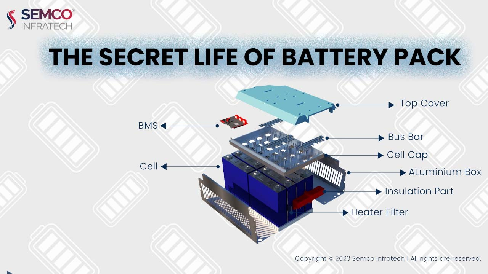

This guide explains battery packs, their components, and key features.
1. What is a Lithium-Ion Battery Pack?
A lithium-ion battery pack, also known as a battery module, isn't the battery itself, but rather the assembly process. It involves packaging, encapsulating, and connecting multiple individual lithium-ion cells. These cells can be linked in series or parallel configurations, considering factors like sturdiness, thermal management, and compatibility with a Battery Management System (BMS).
The overall design, welding techniques, safety measures, cooling system, and BMS integration all contribute to the pack's effectiveness.
2. What Makes Up a Battery Pack?
A battery pack is comprised of several essential elements:
- Battery Modules: These are the individual "hearts" of the pack, responsible for storing and releasing electrical energy.
- Electrical System: This network of copper bars, high-voltage and low-voltage wiring harnesses, and safety devices ensures smooth power transmission and communication within the pack.
- Thermal Management System: This system, either air-cooled or liquid-cooled, maintains a suitable temperature for optimal battery function and lifespan.
- Box: This acts as the pack's "skeleton," providing structural support, protection against physical impacts, vibrations, and environmental factors.
- Battery Management System (BMS): Considered the "brain" of the pack, the BMS monitors vital parameters like voltage, current, and temperature. It also performs functions like cell balancing and data transmission.

3. Key Features of Battery Packs
Here are some crucial aspects of battery packs to remember:
- Battery Consistency: Packs require batteries with a high degree of consistency in terms of capacity, internal resistance, voltage, discharge curve, and lifespan.
- Cycle Life: A pack's cycle life (number of charge/discharge cycles) is typically lower than that of a single battery.
- Operating Conditions: Packs have specific limitations regarding charging/discharging currents, charging methods, and temperature ranges.
- Cell Balancing: After assembly, packs undergo a "formation" process to improve voltage and capacity. They also require ongoing protection through charging balance, temperature monitoring, and voltage/current overload safeguards.
- Voltage & Capacity Requirements: The pack's voltage and capacity must meet the design specifications.
4. Assembly Methods (PACK Methods):
Battery packs are constructed using series-parallel connections:
- Series-Parallel Composition: This involves connecting battery modules in series or parallel configurations. Parallel connections increase capacity while maintaining voltage, while series connections increase voltage but keep capacity constant.
- Battery Selection: Batteries for the pack must be chosen based on design requirements. Parallel and series-connected batteries need to be identical in type, model and have minimal variations in capacity, internal resistance, and voltage (ideally less than 2%). Both pouch and cylindrical cell formats can be used, often requiring multiple strings.
- PACK Process: Welding (laser, ultrasonic, or pulse) or elastic metal sheet contact are the two main methods for assembling packs. Welding offers superior reliability but makes battery replacement difficult. Conversely, metal sheet contact simplifies replacement but may compromise connection quality.
5. Understanding Battery Pack Technical Parameters
Here's how to interpret common battery pack specifications:
- Combination (e.g., 1P24S): "P" denotes parallel cells, and "S" denotes series cells. So, 1P24S indicates 24 cells connected in series and 1 cell in parallel. This configuration doubles the voltage (24 x 3.2V = 76.8V).
- Rated Capacity (e.g., 280Ah): This refers to the amount of energy the pack can deliver consistently under normal operating conditions. It's measured in ampere-hours (Ah) and represents the product of discharge current (A) and discharge time (h). In this example, the pack can continuously discharge for 2 hours at a maximum rate of 0.5C.
- Rated Energy (e.g., 21.504kWh): This is calculated by multiplying the rated capacity (Ah) by the nominal voltage (V). Thus, the total energy output depends on both voltage and capacity.